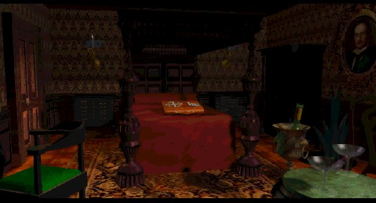

"What's happening?"
Let's be honest here, the seventh guest isn't the most clear game around, a lot of stuff happens and most of the time you don't understand it. The endingscene is well known for this. I'm trying to explain some of my theories about certain things in the game. I must say that reading the novel helps a lot, also checking out the bathroom here clears up a couple of things as well. These are a couple of the biggest issue's that I try to explain.
Why do the guests enter the house?
They got an inventation to spend the night, if they walked out in the morning, then their hearts most secret desire would be granted. All they had to do is solve their puzzle.
Why does Stauf invite them?
First of all he likes games and for that you need players, secondly it was the guests job to fetch the seventh guest for him. The fact that he can't take the seventh guest himself is a common fact in most stories. For instance in the book 'The discovery of heaven', the angels want to take back the ten commandments from the people, but they can't take it themselves. They have to find someone who will bring it to them. In 'Faust' this is the same. The person visited by the devil has to give in, otherwise the devil is helpless. The same goes with Jesus in the bible. The temptation in the desert has a similar feel.
What did Stauf want to do with the boy?
Stauf had voices in his head, demons if you will. These creatures wanted to live in the real world, for that they
needed a lot of souls. In the 11th hour Stauf says that the house lives and therefore it must eat. If Stauf took the soul of Tad then the voices could enter the world. Stauf was their tool to do this. He got power in return, a classic Faustian bargain.
What exactly happened in the attic?
Well, they way I see it is that the night just goes round and round. Everytime the guests enter the house, be it in spirit form of course, and everytime Tad does too. The only way to stop this circle is to solve the puzzles that Stauf set out for
the guests. Then we go to the attic. Tad is trapped, but only if the Player, the spirit of Tad, fights back to save the
boy, then Stauf is stopped.
What happens to Stauf?
Well, I see it that the voices take him back to their 'world' because he has failed to open the gate to the real world. If the world of the voices is hell or some other netherworld, is left in the middle. I think it doesn't mean that Stauf was destroyed. The voices just put him back in his mansion where he stayed to lure and hunt new people.
Is Tad dead or not?
Difficult question, you see him in the spirit form, but you never see him die. I like to think that he remained in the middle. If Tad did die, then Stauf would have won. And in the very end Stauf loses. But Tad never got out of the mansion and was doomed to live the same night over and over again. That sounds pretty dead to me. He has a grown up voice as well. So I think that he died but that his soul wasn't captured by Stauf. I feel that in the final scene, you save his soul. Then the bright light means heaven for Tad. This is my version, the official guide has a novelised version and there you walk out of the house as a grown up Tad. Just pick your favorite version.